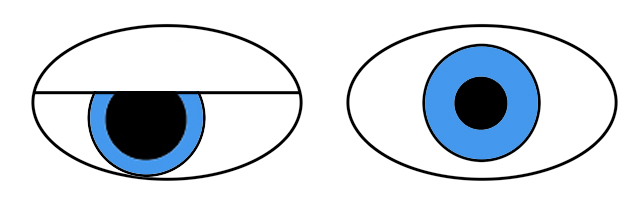

☰
Pupil Disorders
Mydriasis of Third Nerve Palsy

What is it?
Dilated (mydriatic) pupil as part of third nerve palsy
Attributed to damage of the parasympathetic component of the third nerve
Common causes: head trauma, cerebral hemispheric herniation, ischemia, inflammation, aneurysm
What does it look like?
Core clinical features
Patient reports diplopia
Mydriasis may be marked or minimal and does not cause symptoms
Mydriatic pupil constricts less forcefully to direct light than does the unaffected pupil
Ptosis on the side of the mydriatic pupil
Ocular ductional deficits in the domain of the third nerve on the side of the mydriatic pupil
What else looks like it?
Traumatic, inflammatory, dysplastic iridoplegia
Pharmacologic mydriasis
Tonic (Adie) pupil
What should you do?
In adults, order prompt CT/CTA; in children, order prompt MRI/MRA
If CT/CTA or MRI/MRA is negative, order brain MRI only if ischemia is not a likely cause in adults
If brain MRI is negative, proceed with LP in the appropriate setting
Tip:
third nerve palsy never causes mydriasis without also causing ptosis or ocular ductional deficits
What will happen?
Depends on the underlying condition
Trap:
delayed diagnosis of third nerve palsy caused by brain aneurysm could lead to aneurysmal rupture with marked morbidity and 50% mortality
Pupil Disorders
Anisocoria Overview
Physiologic Anisocoria
Horner Syndrome
Tonic (Adie) Pupil
Argyll Robertson Pupil
Pharmacologic Mydriasis
Episodic Mydriasis
Iridoplegic Mydriasis
Mydriasis of Third Nerve Palsy
Tectal Pupils